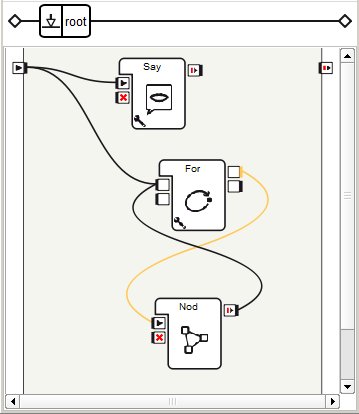
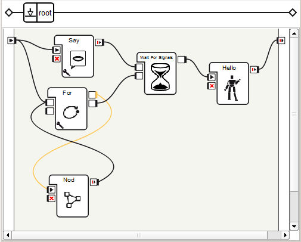

Using Flow Control boxes¶
Create the following behavior: while introducing himself, NAO nods two times, then when both are done, NAO starts to wave.
| Step | Action |
|---|---|
Drag and drop a Speech> Creation > Say box. Write NAO‘s introduction sentence (e.g. “Hello I am NAO the little robot and I am ready to serve you, master!”) Connect its input to the main input of the behavior. For further details, see: How to make NAO say something. |
|
Create a new Timeline box, call it “Nod”. Create a simple nodding movement behavior with its Motion Timeline. Connect its input to the main input of the behavior. For further details, see: How to create a Timeline box and Tutorial about movements. |
|
| Test | If you use a real robot, you have to stiffen your robot first. For further details, see: How to wake up your NAO. Click the |
Add a Programming > Logic > Counter box to your behavior. Set its Final value parameter to 2. Connect it to your “Nod” box as below (outputs with inputs):  |
|
| Test | NAO nods two times and talk. It’s not bad but we also want NAO to start waving after he has finished nodding and talking. This is quite simple: a Wait For Signals box should be used. |
Add a Programming > Logic > Wait For Signals box. Connect the onStopped output of Say box to its Signal 1 input and the onStopped output of For to its Signal 2 input. The Wait For Signals box stimulates its output once the two inputs are stimulated. |
|
Add a Animation > Animation Library > Dialog animations** > Affirmation > NAO > GatherBothHandsInFront_01 box.  |
|
| Test | NAO starts waving after he has finished nodding and talking! |
As a final exercise, you could create a single box that perform all these actions. For further details, see: How to group several boxes into a single one. |
 Play button: NAO nods once
and introduces himself.
Play button: NAO nods once
and introduces himself.{kind=link}
{kind=link}